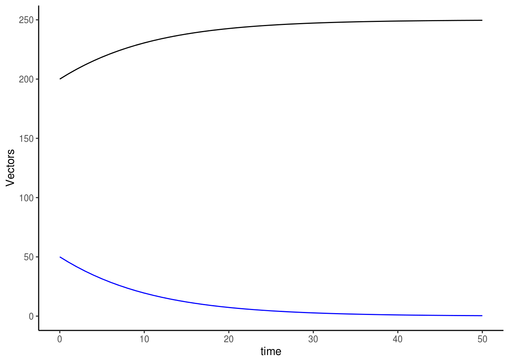

Lesson objectives:
- Introduce students to the world of mathematical modelling – the art, the mechanics, the possibilities, and the limitations
- Be comfortable with – and even appreciate – math and theory
- Equip students with tools to construct their first model
- Work through examples of how to use models to solve real world problems
Lesson outline:
Total lesson time: 3 hours
- Introduction to mathematical models (10 min)
- Learn about the different moving parts of a model and common things you can do to them and get out of them (20 min)
- Go through examples of some classic models in EEB (30 min)
- Working through an ecological model (1 hour)
- Working through an example of an evolution model (1 hour)
Up until this point in this course, we’ve been working with statistical models with the goal of characterizing relationships between variables and their significance in existing data. Today, we are going to venture into another branch of applied mathematics and learn about mathematical models. A mathematical model (a.k.a. first-principle models) is a description of a system using a series of equations. These models are used extensively throughout the natural and social sciences to help explain and predict the behavior of various systems of interest.
The world is governed by series of natural laws and “truths” biologists refer to as first principles. For instance, ocean currents flow in a certain direction, and some salmon species reproduce just once in their life time. Mathematical models provide us with an opportunity to study the intricacies of biological systems under a framework of first principles. More accurately, models forces us to explicitly lay out our conception of “reality” and to confront those intuitions. Intuition is perhaps the biggest pitfall in biology – everybody loves to tell a good story where everything works out and everything makes perfect sense, but how rigorously have we actually weeded them before accepting story as dogma? When you construct a model, you have no choice but to verify every single last piece of information you plan to include in your model.
Technically, one can describe any biological phenonemon with math. At the same time, however, it is rarely the goal to rewrite “reality” in math. The most elegant models are those able to describe succinctly a system’s most essential attributes, and the best theoreticians are those with the state-of-the-art knowledge of the system and the clarity of mind to know exactly what those important features are given the questions being asked. Sometimes we ask grand questions about driviers of macro system change, other times we would kill to find that devil in the details. Knowing how best to represent your system and answer your question is a skill that comes with experience (read: lots of trials and lots and lots of errors).
What models are good for:
Limitations of a model:
Diversity promotes science and progress. Thus, any good researcher should strive to have at least a basic understanding of both the empirical and theoretical sides of science in order to facilitate collaboration and synthesis, and to push the frontiers of knowledge.
Two basic categories based on how to solve: analytic and numeric
Two basic categories based on type of dynamics: discrete and continuous
Two basic categories based on nature of change: deterministic and stochastic
In this section, we will learn different ways to represent system change from one time step to another by examining and deriving some classic models in EEB.
The first population model we examine is the exponential growth model, which describes a population that grows without restriction, e.g., bacteria on a petri dish.
\[N_{t+1} = RN_t\]
\[\frac{dN}{dt}=rN\]
Note that \(R\) and \(r\) are not the same. \(R\) is termed the reproductive factor (or ratio, or number), and it represents the number of replicates each individual makes of themselves in a subsequent time step. On the other hand, \(r\) describes the per capita change in number of individual from one generation to the next and is referred to as the intrinsic growth rate.
If we want to find out what the population size is at \(t=t+1\), we simply plug the necessary parameters into the recursion equation listed like this:
# Set up some master controls such that it is easier to customize model later on
N0 = 10 # Initial population size
R = 1.2 # Reproductive factor
N1 = R*N0; N1 ## [1] 12Most of the time though, biologists want to track the population for more than just one time step. In that case, we could continue to do math like this
\[N_{t+5} = R(R(R(R(RN_0))))\]
which simplifies to
\[N_{t+5} = R^5 (N_0)\]
and then further simplifies to
\[N_{t+n} = R^n(N_0)\]
We coould also take a graphical approach and draw out the dynamics of the system for 50 time steps.
N0 <- 10 # Initial population size
R <- 1.2 # Reproductive factor
times <- 50 # Number of time steps
N <- c() # Make empty vector to store population size at each time step
N[1] <- N0 # Initiate vector
# Make for loop to iterate through the model 50 times
# Running (times-1) iterations gets us to generation N[i+1]
for (i in 1:(times-1)) {
N[i+1] = R*N[i]
}
# Plot the newly loaded N vector
plot(seq(1, times, 1), N, xlab="time")As expected, this population is literally spinning out of control! In reality, however, even bacteria on a petri dish can’t grow forever. What are some factors that may limit population growth?
Organisms often find themselves limited by resource availability as their numbers grow. This causes their per capita growth rate to decreases as the population increases towards the resource limit known as the carrying capacity, \(K\).
\[N_{t+1} = N_t+r(\frac{K-N_t}{K})N_t\]
\[\frac{dN}{dt} = r(\frac{K-N}{K})N\]
When interpreted in plain English, the growth rate of the population is being discounted depending on how close to \(K\) it is. When the population is very small, \(\frac{K-N}{K} \approx 1\) and logistic growth approximates exponential growth. When the population is close to \(K\), \(\frac{K-N}{K} \approx 0\) and thus the population size stops increasing.
We can examine the logistics growth model graphically just like we did before.
N0 <- 10 # Initial population size
r <- 0.5 # Intrinsic growth rate
K <- 1000 # Carrying capacity
times <- 50 # Number of time steps
N <- c() # Make empty vector to store population size at each time step
N[1] <- N0 # Initiate vector
for (i in 1:(times-1)) {
N[i+1] = N[i]+r*N[i]*(1-(N[i]/K))
}
plot(seq(1, times, 1), N, xlab="time")Initially (\(t=0\) to \(t=10\)), the population grows rapidly, and the form of the growth model resembles the exponential growth model. As the population increases (\(t=10\) to \(t=20\)), the growth rate slows, and eventually plateaus at the carrying capacity \(K=1000\).
This example will show case how to model two interacting populations, specifically, populations in competition for a limiting resource. Focusing on a continous time example, we will first write down the logistic growth models of two populations (differentiated by subscripts), and then add in the effect of their interaction.
\[\frac{dN_1}{dt} = r(\frac{K-N_1}{K})N_1\] \[\frac{dN_2}{dt} = r(\frac{K-N_2}{K})N_2\]
What does competition do to organisms? Well, many things, but in terms of population dynamics, competition hinders the growth of a population, and the degree of reduction in growth is governed by the competition coefficient, \(\alpha_{ij}\). The subscripts \(i\) and \(j\) correspond to our two populations, and the order of the subscript tells us who is affecting whom. For example, \(\alpha_{ij}\) represents the effect of \(j\) on \(i\), whereas \(\alpha_{ji}\) represent the effect of \(i\) on \(j\).
Adding these terms into the population growth equations gives the classic Lotka-Volterra model for competition: population growth is governed jointly by how close it is to carrying capacity, but also the effect of the competing species has on it (per capita strength of effect \(\times\) number of individuals around to exert this effect).
\[\frac{dN_1}{dt} = r(\frac{K- N_1 - \alpha_{12} N_2}{K})N_1\] \[\frac{dN_2}{dt} = r(\frac{K - N_2 - \alpha_{21} N_1}{K})N_2\]
In line with the most basic definition of evolution, evolution models describes change in allele frequency in a population over time. These models are sometimes referred to as population genetics (pop gen) models. We will work with a one-locus haploid model in this example.
Consider a population of individuals each carrying one of two variants of a certain gene; let’s call them alleles A and a because we are creative like that. Similar to ecologists, evolutionary biologists are often interested in the reproductive factor (or survivability, denoted \(W\)) of individuals with different genotypes. The dynamics of these two sub-populations can be expressed as
\[N_{A, t+1} = W_A N_{A, t}\]
\[N_{a, t+1} = W_a N_{a, t}\]
Typically, evolutionary biologists are concerned with the proportion of a certain allele in a population rather than changes to their absolute numbers. Here, we will use \(p\) and \(q\) to denote the proportions of the A and a alleles in the population, respectively.
\[p_{t}=\frac{N_{A,t}}{N_{A,t}+ N_{a,t}}\]
\[q_{t}=1-p_{t}\]
Doing so also allow us to leverage the fact that the proportions \(p\) and \(q\) must add up to 1, and therefore the dynamics of the allele frequencies in a population can be described with just one equation:
\[p_{t+1}=\frac{W_A N_{A,t}}{W_A N_{A,t}+W_a N_{a,t}}\]
In order to write an equation that tracks change in allele frequency over time, as promised, we need to transform \(N\) (the number of each type) to \(p\) (proportion). Through the magic of algebra, we have
\[p_{t+1}=\frac{W_A p_t}{W_A p_t+W_a q_t}\]
Note that \(N_A\) is not interchangeable with \(p\); the algebra just happened to work out this way.
Lastly, remember our good friend \(p+q=1\)?
\[p_{t+1}=\frac{W_A p_t}{W_A p_t+W_a (1-p_t)}\]
Don’t panic, and try not to be overwhelmed. Trust us when we say it is not as daunting as it appears. This doesn’t mean that it is easy to write a model either, but there are lots of resources available to help you achieve your ambition. The biggest hurdle is often to simply start. Know that whatever you do, these are just numbers and symbols and words on paper and on the screen, you can’t break anything or hurt anything (except maybe R, but just turn it on and off again and all will be forgiven, life will move on). So don’t be afraid to start typing and playing around with ideas. Know also that you will be making mistakes and will have to troubleshoot your way through a theory project (any project really…). We all go through that, even the most experienced theoreticians make mistakes. Experience comes with time and practice, and you will learn how to quickly spot mistakes, and how to effectively troubleshoot. None of that will happen though, if you don’t start.
So let’s start!
We will be following this recipe (roughly) in our build-a-model workshops.
First, take a deeeeeeeeeeeeeeep breath.
In this workshop, we are going all the way back to the dawn of mathematical models in biology. We will borrow from the classic malaria model orginally developed by Ross (1908), and later solidified by Macdonald (1956), which investigates the required efficacy of mosquito management programs in order to eradicate malaria.
Note: It is actually very common practice to adapt old models to answer new questions. In fact, practically all of the malaria models that exist today is a variation of the Ross-Macdonald model.
The Ross-Macdonald model is a continuous-time, deterministic, model which tracks the number of Susceptible, Infected, and Recovered subjects over the course of a malaria outbreak. These models are sometimes referred to as SIR models, and they have been adapted to model numerous diseases beyond malaria.
Figure 1 shows a flow diagram of the malaria transmission cycle we will be modelling today.
Flow diagram illustrating a basic epidemiological model of malaria transmission. The blocks represent different host and vector classes within a population. Arrows describe possible movements between host/vector categories. Subscripts h and m represent hosts and mosquitoes, respectively.
The principle epidemiological compartments (i.e., variables) of interest are the populations of infectious hosts (\(I_h\)) and infectious vectors (\(I_m\)). These compartments are interdependent via the hosts’ and the vectors’ rate of exposure to the parasite, given by \(\beta I_m\) and \(\beta I_h\), respectively, where \(\beta\) represent the per capita biting rate of vectors. Upon contact, susceptible hosts (\(S_h\)) and mosquitoes (\(S_m\)) become infected with probabilities \(\varphi_h\) and \(\varphi_m\), respectively. For simplicity, we will assume that hosts cannot acquire immunity and so the “recovered” class was not included in this model. Instead, hosts either die of infection at rate \(\alpha\) or recover and return to \(S\) class at rate \(\gamma\). Vectors were assumed to be immediately infectious upon successful infection, are unaffected by the parasites they carry, and remain infected for life (i.e., no \(\alpha\) and \(\gamma\) for vectors). All host and vector die of natural causes at rate \(\mu_h\) and \(\mu_m\), respectively. The host and vector populations were assumed to be closed and constant over time such that all deaths are immediately replaced by immigration of individuals into susceptible classes, represented by the symbol \(\tau\).
After all that prefacing, we’re finally ready to do math!
Recall that, in contrast to recursion equations where we describe directly the change in the value of a variable, an ordinary differential equation (ODE) model describes how the population is changing. We will follow this simple formula when we translate our flow diagram to our equations:
\[\frac{dN}{dt} = rate\;of\;increase - rate\;of\;decrease\]
Or,
\[\frac{dN}{dt} = flow\;rates\;along\;arrows\;entering\;a\;compartment - flow\;rates\;along\;arrows\;exiting\;a\;compartment\]
Note that the order of the entering and exiting of compartments is irrelevant because each time step is so small, it doesn’t matter which event happens first within that time step.
The resulting model is thus made up of a system of four ODEs, two for hosts and two for vectors, written as follows:
\[\frac{dS_h}{dt} = \tau_t - (\mu_h +\beta \varphi_h I_m)S_h + \gamma I_h\]
\[\frac{dI_h}{dt} = (\beta \varphi_h I_m)S_h - (\gamma + \mu_h + \alpha_h) I_h\]
\[\frac{dS_m}{dt} = \tau_m - (\mu_m + \beta \varphi_m I_h)S_m\]
\[\frac{dI_m}{dt} = (\beta \varphi_m I_h)S_m - \mu_m I_m\]
The trickiest part of writing these equations is probably to remember that the rate at which susceptible hosts (\(S_h\)) become infected (\(I_h\)) will depend on how many infected mosquitoes (\(I_m\)) are around to deliver those infection (\(\beta\) is the per capita biting rate, which means the number of times each mosquito will bite a host). The same logic applies to the process in which mosquitoes become infected (going from \(S_m\) to \(I_m\)).
Now that we have our model written out, it is R’s turn to do some math for us. Specifically, R will solve this system for us and save us from a lot of headache and paper. To solve a system of ODEs means we will integrate the equations (i.e., turn \(\frac{dN}{dt}\) into \(N\)) to find expressions that describes the state of each population as a function of the remaining variables and parameters.
We will code our model like we did before, this time with roughly 100\(\times\) the parameters, variables, and equations. First, we will set up a bunch of master controls for easy model manipulation later on. Then, we will write out our ODE model as a function that our solver will deal with. Lastly, we will call the ODE solver lsoda to put all this together.
# Units are assumed to be /day
mu.h <- 0.05; mu.m <- 0.1 # Natural mortality
psi.h <- 0.1; psi.m <- 0.1 # Probability of infection upon exposure
b <- 0.25 # number of times a mosquito bites per day
N <- 500 # Total population size (remains constant)
beta <- b/N # Number of times a mossie bite each person in a day
gamma <- 0.03 # Recovery rate (host only)
alpha <- 0.2 # Disease mortality rate (host only)
# String it all up as a vector
parms <- c(mu.h, mu.m, psi.h, psi.m, b, N, beta, gamma, alpha)s.h0 <- 450; i.h0 <- 50 # Host - make sure this is the same N as above
s.m0 <- 200; i.m0 <- 50 # Vector
# Make into another vector
Y0 <- c(s.h0, i.h0, s.m0, i.m0)odeequations <- function(t, y, parms)
{
# Retype parms and initial conditions
# This will link parameters set "outside" of the function to the equations "inside"
# Natural mortality parms
mu.h <- parms[1]; mu.m <- parms[2]
# Probability of infection parms
psi.h <- parms[3]; psi.m <- parms[4]
# Biting rate parms
b <- parms[5]; N <- parms[6]; beta <- parms[7]
#recovery parms
gamma <- parms[8];
#virulence
alpha <- parms[9];
# Initial conditions
s.h <- y[1]; i.h <- y[2]; s.m <- y[3]; i.m <- y[4]
# These are the differential equations
# These should be written in the same order as the initial conditions
dsh = (mu.h*s.h + (mu.h + alpha)*i.h) - (mu.h + beta*i.m*psi.h)*s.h + gamma*i.h
dih = beta*i.m*psi.h*s.h - (gamma + mu.h + alpha)*i.h
dsm = mu.m*(s.m + i.m) - (mu.m + beta*i.h*psi.m)*s.m
dim = beta*i.h*psi.m*s.m - mu.m*i.m
return(list(c(dsh, dih, dsm, dim)));
}Anddddd that’s it! We are done! We can now look at our shiny model outputs.
## time 1 2 3 4
## [1,] 0 450.0000 50.00000 200.0000 50.00000
## [2,] 1 461.2620 38.73803 204.3348 45.66525
## [3,] 2 469.8378 30.16215 208.3448 41.65521
## [4,] 3 476.3845 23.61546 212.0419 37.95808
## [5,] 4 481.3964 18.60361 215.4410 34.55901
## [6,] 5 485.2459 14.75407 218.5587 31.44129The output dataframe consists of five columns, one for time, and the next four represent the population size of each of our population classes at those time points. The columns are organized in the same order we typed out our equations. Therefore, column 1 represent susceptible hosts, column 2 infected hosts, etc. To make our lives easier from now on, we’ll go ahead and rename these columns. We’re also going to force the output into a data frame so that it is easier to work with.
We can inspect the dynamics of this system by ploting out these trajetories.
# Host
ggplot() +
geom_line(data=odeoutput1, aes(x=time, y=S.h), colour="black") +
geom_line(data=odeoutput1, aes(x=time, y=I.h), colour="blue") +
labs(y="Hosts") +
theme_classic()# Vector
ggplot() +
geom_line(data=odeoutput1, aes(x=time, y=S.m), colour="black") +
geom_line(data=odeoutput1, aes(x=time, y=I.m), colour="blue") +
labs(y="Vectors") +
theme_classic()
Feel free to play with the parameter set, and investigate what happens to disease dynamics as you do so. Is the system more sensitive to some parameters than others? What are some parameters we can change or add to imitate various means of disease control?
In this section, we will switch gears 720\(^\circ\), and work on a discrete time, stochastic, evolution model! We will use an example of drug resistance emergence to ask whether random events – genetic drift – can counteract the effect of drug-resistance selection and block the evolution of this trait.
You may recall from evolutionary biology class that the relative strengths of drift vs. selection depend on population size and mutation rate. Here, we will use simple population genetic simulations to disentangle these different factors and get a better understanding of the role of these various forces of evolution.
We will use the single-locus haploid model we were working on before as the foundation of this model. Consider a population with \(N\) individuals (of parasites) each carrying a variant of this gene: A is a drug-sensitive allele, and a confers resistance. We will impose mutation and selection on this population at every time step, and at the end of each time step, we will simulate genetic drift by random selecting a subset from the standing population.
At each time step, some fraction of a alleles will mutate to A at rate \(m\) and vice versa.
\[p_{t+1} = (1-m)p_t + m(1-p_t)\]
Recall this equation:
\[p_{t+1}=\frac{W_A p_t}{W_A p_t+W_a (1-p_t)}\]
Recall also that selection acts on relative fitness, specifically, the difference in relative fitness between A and a. This is known as the selection coefficient, and is commonly denoted \(s\). The fitness of A relative to a can be expressed simply as \(\frac{W_A}{W_a}\). Taking \(w_a\) as the reference (i.e., setting \(w_a\) to 1), we obtain the selection coefficient against A (i.e., assuming A is at disadvantage) as follows:
\[s=1-\frac{W_A}{W_a}\]
Through the magic of algebra, we can derive an expression for \(p_{t+1}\) consisting only of terms related to our focal allele A:
\[p_{t+1}=\frac{p_t (1-s)}{p_t(1-s) + (1-p_t)}\]
We will simulate genetic drift by choosing a random sample from the population. More specifically, we obtain \(N_A\) by drawing \(N\) individuals from a population where a fraction \(p\) of the population is A using the function rbinom. After this draw, we can retrieve \(p\) from \(N_A\) with \(\frac{N_A}{N}\).
First, we’ll set up parameters and initial conditions. We will initiate our population with equal proportions of the A and a alleles, and we will investigate a scenario where drugs don’t exist (i.e., A and a perform equally well).
# Time
times <- 5000
timevec <- seq(1, times, 1)
# Parameters
N <- 10000 # Total population size (assume constant)
m <- 0.001 # Mutation rate
s <- 0 # Selection coefficient
# Intitial condition
p <- 0.5 # proportion of A allele
# Empty vector to store values of p over time
freq <- c()Then, we will write a for loop to help us impose the various forces of evolution repeatedly through time.
for(i in 1:times) {
# Mutation
p <- (1-m)*p + m*(1-p)
# Selection
p <- ( p*(1-s) / (p*(1-s)+(1-p)) )
# Drift
p <- ((rbinom(1,N,p)) / N)
# Store values in vector
freq[i] <- p
}That’s it! We just made a stochastic population genetics model!
Let’s have a look at the results.
Here, we see that in the absence of selection, mutation and drift causes allele frequency to fluctute randomly, but for the most part \(p\) seems to be hovering around its initial values of 0.5.
Next, we can add in some drugs and see what happens to the fate of the drug-sensitive A alleles.
# Update s
s <- 0.005
# Don't forget to reset p and the storage vector
p <- 0.5
freq <- c()
# Run loop again
for(i in 1:times) {
# Mutation
p <- (1-m)*p + m*(1-p)
# Selection
p <- ( p*(1-s) / (p*(1-s)+(1-p)) )
# Drift
p <- ((rbinom(1,N,p)) / N)
# Store values in vector
freq[i] <- p
}
# Make a plot of results
ggplot() +
geom_line(aes(x=timevec, y=freq)) +
labs(x="time", y="p") +
theme_classic()Oh dear! It took no time for the resistant allele (a) to take over! The population of the sensitive strain doesn’t drop to zero, though, why is that? And lastly, feel free to play around with this model to investigate the relative effects of mutation, selection, drift, and how population size mediates all of this!
Hartl, D. (2000). A Primer of Population Genetics (3rd Ed). Sinauer Associates Inc., Sunderland, MA.
Macdonald, G. (1956). Theory of the eradication of malaria. Bulletin of the World Health Organization, 15(3–5): 369–387.
Otto, S. & Day, T. (2007). A Biologist’s Guide to Mathematical Modeling in Ecology and Evolution. Princeton University Press, Princeton, NJ.
Ross, R. (1908). Report on the prevention of malaria in Mauritius. Waterlow and Sons Limited, London, UK.
This work is licensed under a Creative Commons Attribution 4.0 International License. See the licensing page for more details about copyright information.